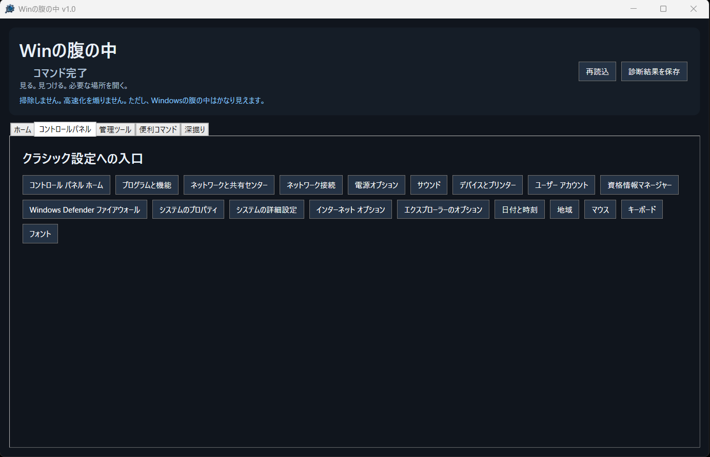
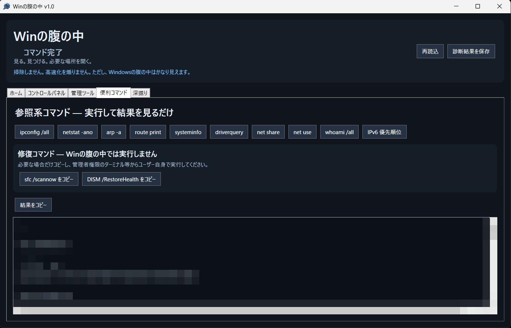
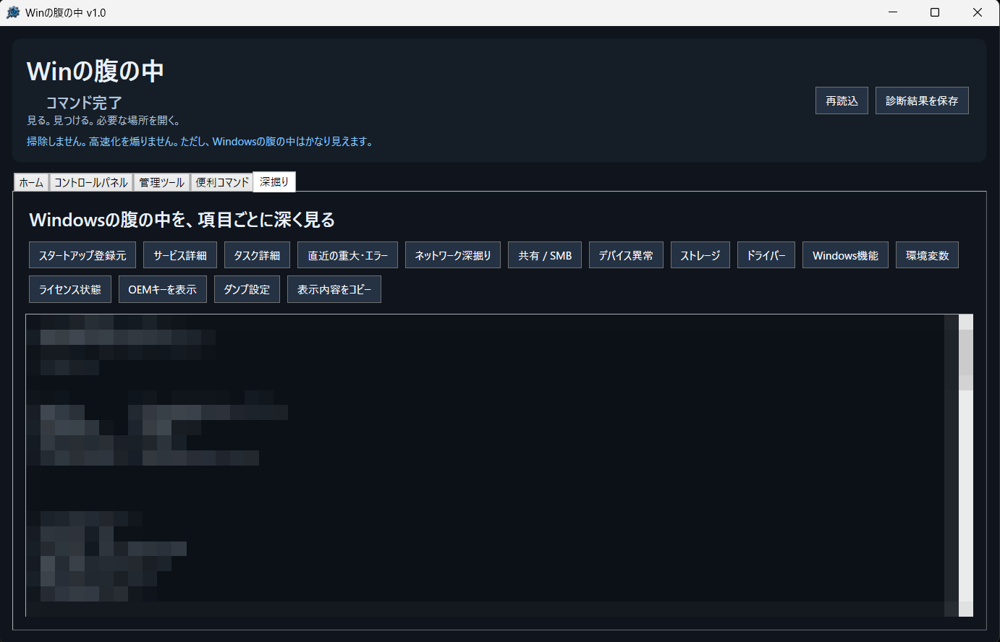

Winの腹の中とは
Winの腹の中は、Windows PCの状態確認やトラブル切り分けに使う情報、 設定画面、標準コマンドをひとつにまとめた参照・診断ツールです。
「Windowsのどこを見ればいいんだっけ？」を少し減らすことを目的に作りました。
ただし、Windowsの腹の中はかなり見えます。
主な機能
PC・Windows基本情報
PCやWindowsの基本情報を一覧で確認できます。
ネットワーク・SMB
ネットワーク構成、共有、SMB関連情報など、 通信トラブルの切り分けに使う情報を確認できます。
セキュリティ・ストレージ
セキュリティ状態、ストレージ、デバイス状態などを確認できます。
Windows管理ツール
コントロールパネルやWindows管理ツールへ、 必要な場所からすぐアクセスできます。
便利コマンド
Windows標準の参照系コマンドをボタンから実行し、 結果を画面で確認できます。
深掘り診断
スタートアップ、サービス、タスク、重大エラー、 ドライバー、環境変数などを詳しく確認できます。
便利コマンド
Windows標準の参照系コマンドを、ボタンから実行して結果を確認できます。
ipconfig /allnetstat -anoarp -aroute printsysteminfodriverquerynet sharenet usewhoami /all- IPv6 優先順位
修復系コマンドについては、安全のためWinの腹の中から自動実行しません。 必要な場合のみコマンドをコピーし、 管理者権限のターミナル等から実行する方式です。
画面

コントロールパネル

便利コマンド

深掘り
対応環境
使い方
- GitHub Releasesから配布ZIPをダウンロードします。
- ZIPファイルを任意の場所へ展開します。
- WinNoHara.exe を実行します。
- 確認したい項目やコマンドを選び、結果を確認します。
インストール作業は不要です。
注意事項
- 本ソフトはWindowsの状態確認とトラブル切り分けを補助するためのツールです。
- Windowsの環境・権限・構成によって、 一部の情報を取得できない場合があります。
- 表示内容や診断結果には、 ユーザー名、PC名、IPアドレス、SID、 プロダクトキー関連情報などが含まれる場合があります。
- 診断結果や「深掘り」の表示内容を第三者へ共有する場合は、 個人情報やPC固有情報が含まれていないか確認してください。
Download / Source
最新版、更新履歴、ソースコードは GitHub上の公式リポジトリから確認できます。